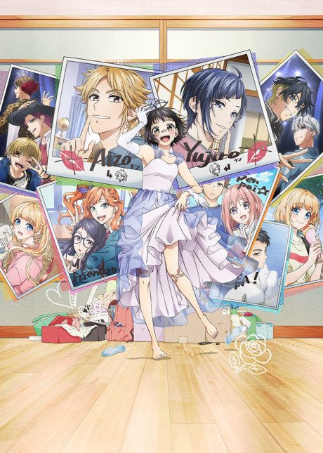

Perfect Blue
PERFECT BLUE
Mima, a pop idol, quits singing to become an actress, and soon starts being stalked, losing her grip on reality.
An original anime, so there's no book to continue with.
8.5AniList score
—Animeter, no votes yet
1film
Rate it or report where you stopped
Is there a manga to continue?
StatusOriginal
An anime original, so there is no manga to pick up from.
Sources: AniList, MyAnimeList
More like Perfect Blue
 Original8.1
Original8.1
 Manga Ch. 1278.4
Manga Ch. 1278.4
 Film8.1
Film8.1
 Film8.1
Film8.1
 Manga Ch. 677.7
Manga Ch. 677.7
 Original7.4
Original7.4
 VN8.9
VN8.9
 Manga Ch. 438.5
Manga Ch. 438.5
 Film8.6
Film8.6
 Unclear7.1
Unclear7.1

Original7.1 Film8.2
Film8.2